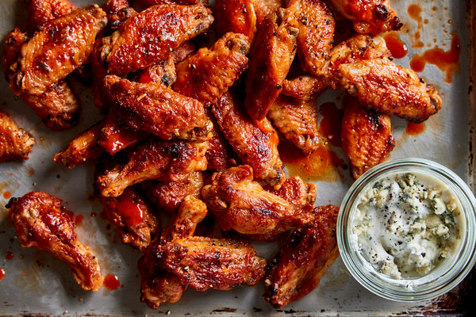

Hot Wings

Description
Classic bone-in hot wings by Ree Drummond
Ingrediants
- Canola Oil
- 24 chicken wing parts (12 wings separated into 2 pieces)
- 1 12-ounce bottle cayenne hot pepper sauce, such as Frank's
- 1 stick of butter
- Several dashes of Worcestershire sauce
- Several dashes hot sauce, such as Tabasco
- Blue cheese dip or Ranch Dip
- Celery sticks
Steps
- Preheat the oven to 325 degrees F
- Heat 3 inches of canola oil in a heavy pot to 375 degrees F.
- Add half the chicken wing parts to the oil and fry them until they're golden brown and fully cooked, 5 to 7 minutes.
- Remove and drain on paper towels.
- Repeat steps 3 and 4 with the other half of the wing parts
- In a saucepan, heat the cayenne sauce and butter over medium-low heat. Add the Worcestershire and hot sauce. Let it bubble up, and then turn off the heat
- Place the wings in an ovenproof dish and pour the hot sauce over the top
- Toss to coat, and then back in the oven for 15 minutes
- Serve with blue cheese, rand and celery sticks
Back